Habitat chooser

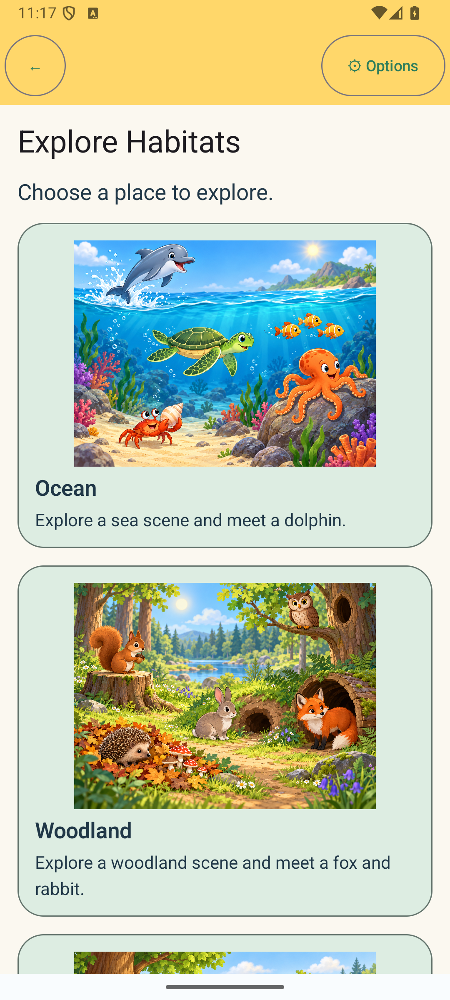

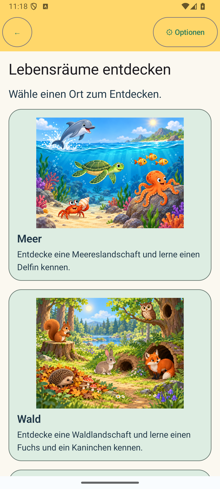
Underground scene and selection

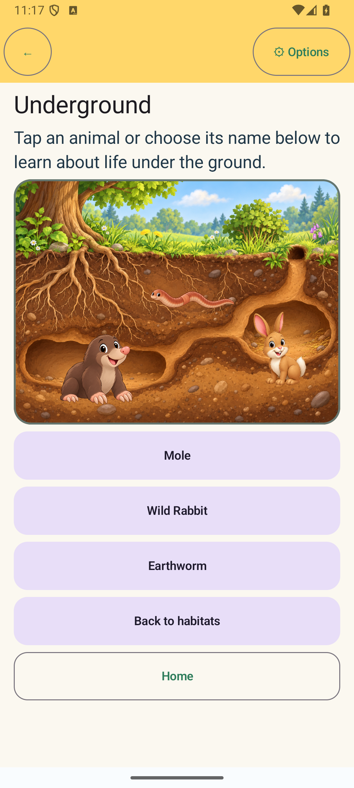

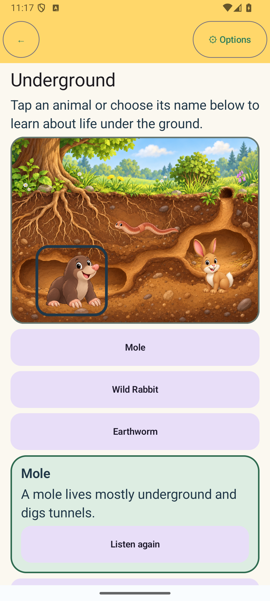

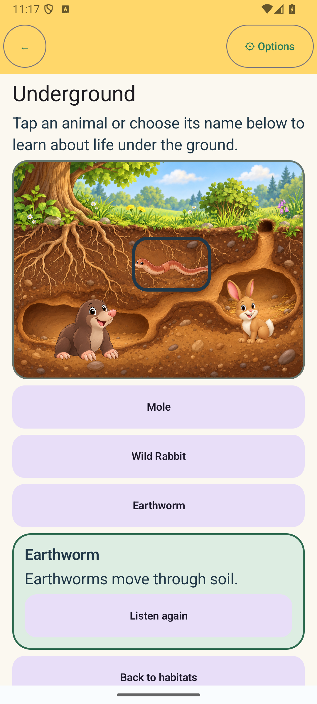

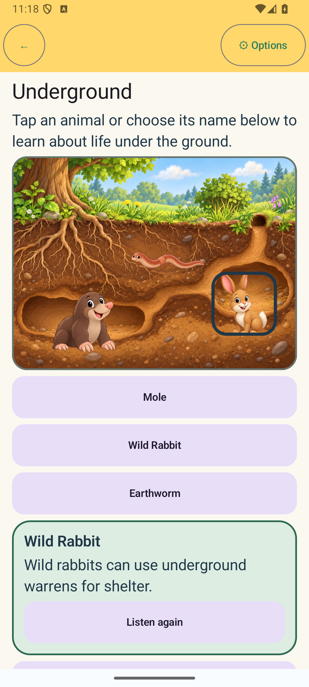
Bilingual interaction and Options return

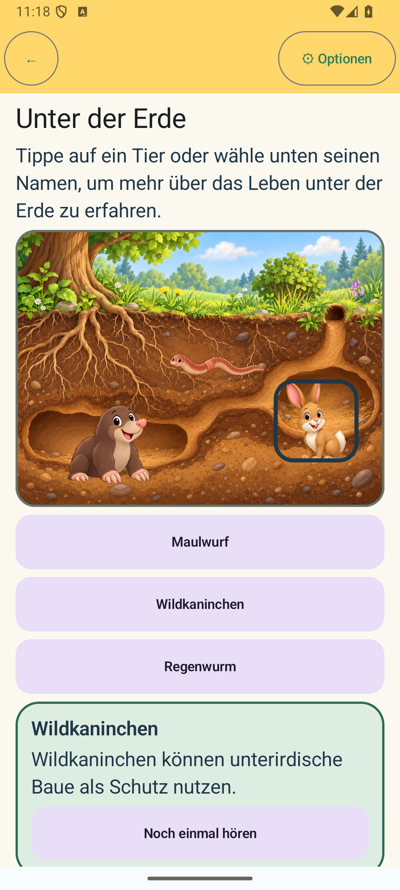

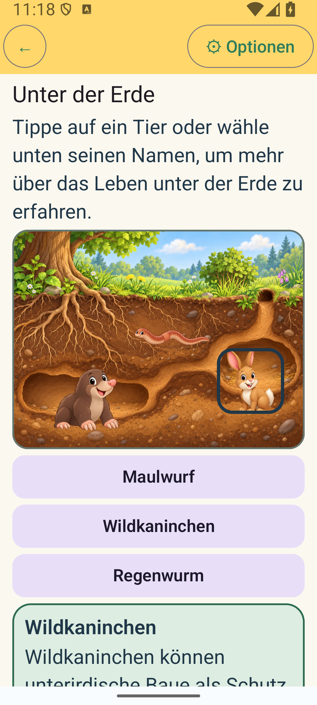

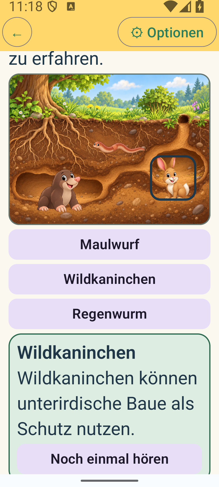
Responsive layouts

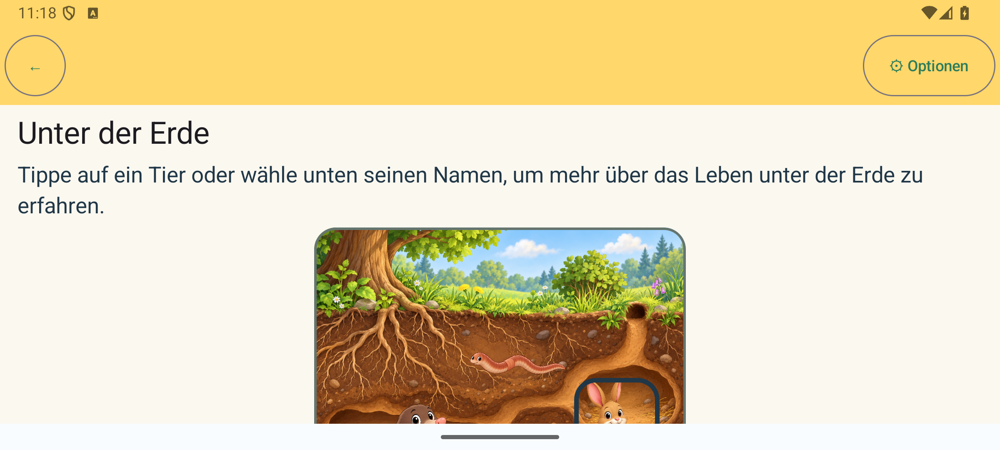

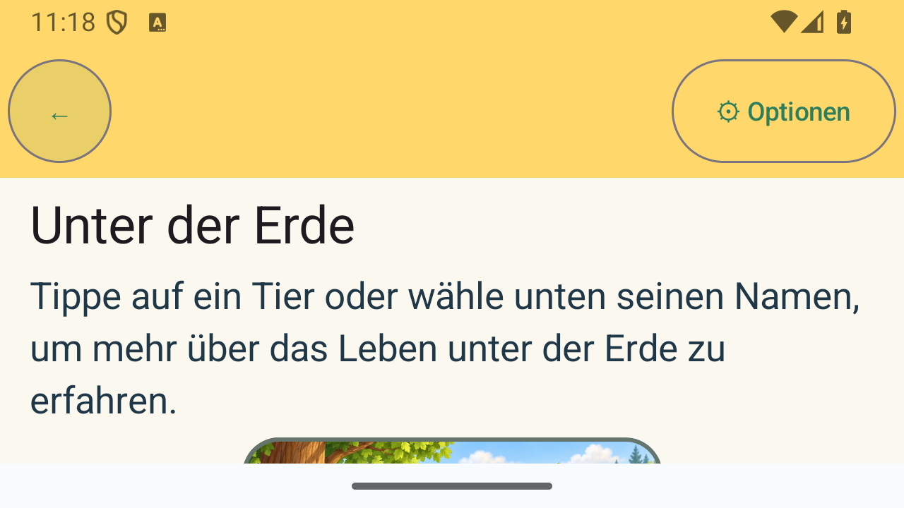

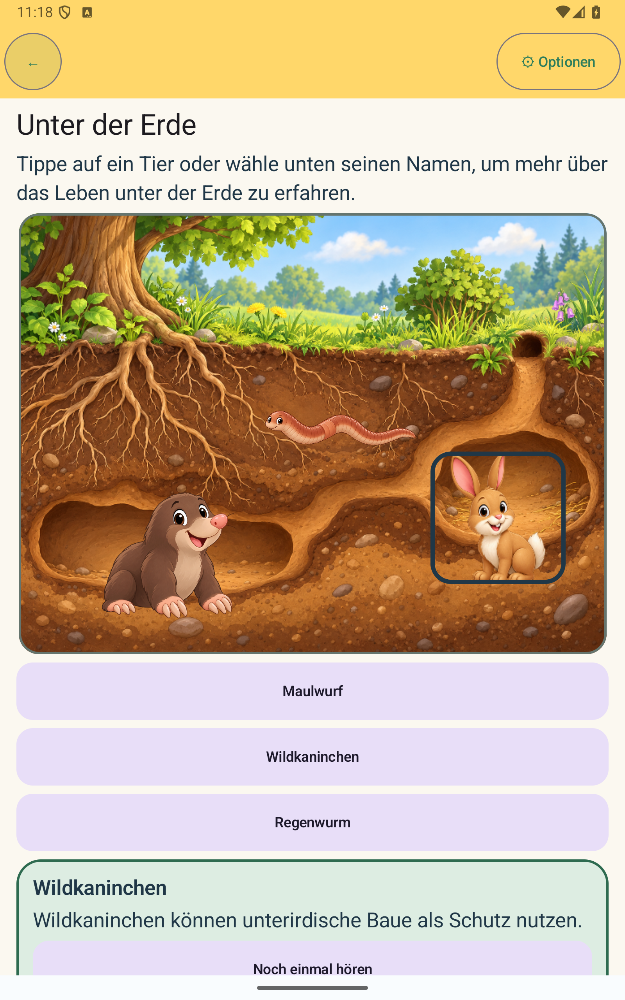

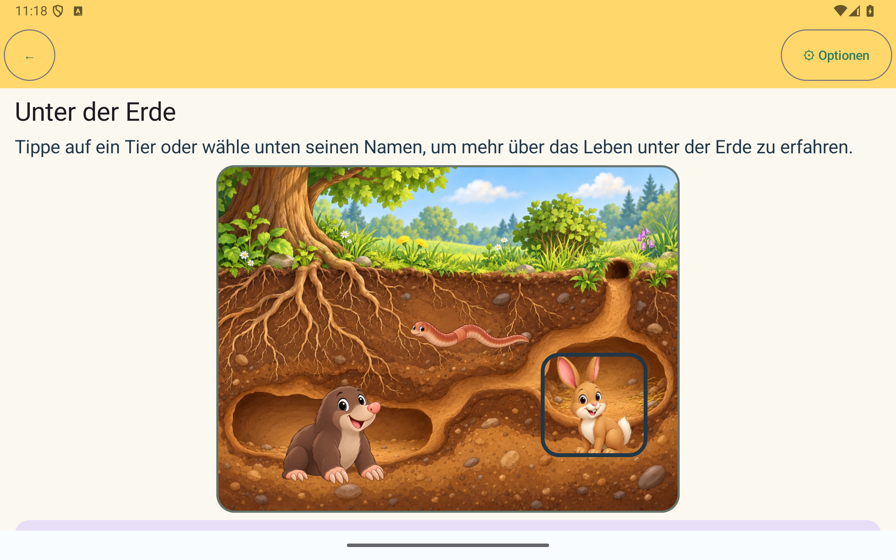
Restoration and navigation

Every image opens its original PNG asset. Captures were taken from the running application on API 35 emulator-5554; no screenshots were composed or fabricated.